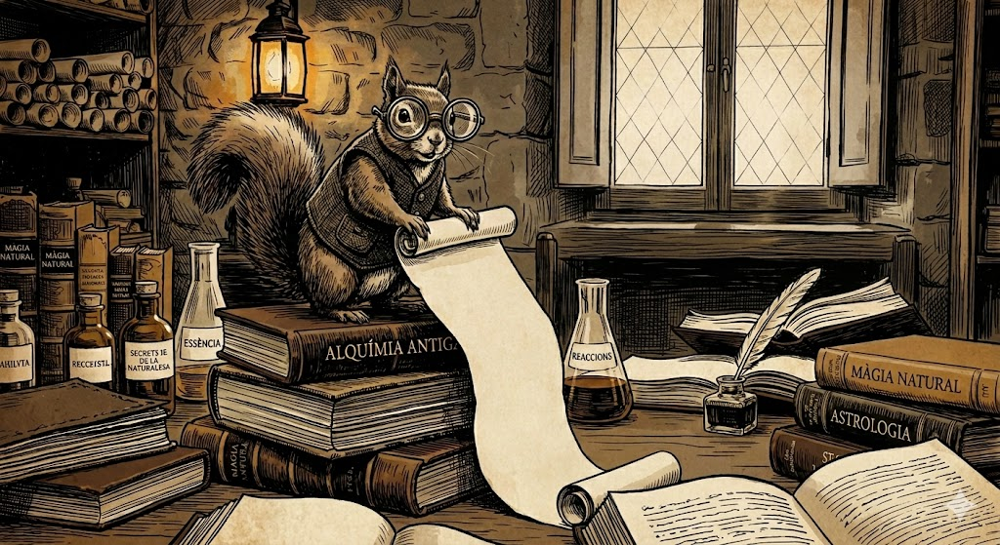

Un petit esquirol s’enfila al damunt d'una pila de llibres. Va vestit amb una jaqueta negre sense mànigues i botonada. Amb aires d’urgència, treu d’una butxaca unes ulleres de lents desproporcionalment grosses i, amb veu aflautada però solemne, treu d’una altra butxaca un pergamí que li arriba als peus. S’aclareix la veu amb un lleu «ehem» i gira la mirada cap als alquimistes, que, interrompent la seva atenta lectura, el contemplen amb ulls cansats.
Pròleg del joc
Ah, honorables alquimistes, mestres de la substància i els encanteris, aplegueu-vos, aplegueu-vos, que us porto un missatge molt important. Això… (aixeca el pergamí amb esforç) això és una veu des de terres llunyanes, és essencial que m'escolteu.
Em dic Esquirol Informador i la mestra Elyria es troba en una situació més que complicada. Quan la vostra mestra us va deixar el llibre de conjurs de la Quinta Essència, ho va fer pensant en un dia com el d’avui. S’ha obert tot sol a vosaltres arribat el moment, i en les seves pàgines, vet aquí, s’ha començat a escriure el vostre destí. Ara us he de transmetre el missatge que la mestra Elyria m'ha comunicat, doncs corre un gran perill:

«Estimats deixebles meus… qui em vau seguir en l’art de la transmutació i de la llum… sóc jo, Elyria. I us parlo des de les entranyes de Kelenzal, des d’on les ombres són tan espesses que gairebé es poden tocar.
No em queda massa temps, m’han acorralat. El meu animaló informador ha descobert el refugi secret de la secta dels monjos de Kelen, convertits per Korihor en servents del Mal. En aquell antic temple religiós profanat, sota el color cendra de les muntanyes, hi estan creant una maledicció molt poderosa... una especie de llavor, a la que anomenaven “Edhoc nutk”. També van veure a la bruixa Cornelia amb els seus subordinats, fent guardia per tot el recinte.
Jo, en saber-ho, vaig córrer a l’Ordre. Però els mags, els meus germans de gremi, van arronsar les espatlles. "No és res", em deien. Així que, vaig fer el que no s’ha de fer: vaig muntar el meu cavall Bronze, aquell que només jo sabia domar, i vaig marxar tota sola cap al Temple Kelen. Un impuls valent, sí, però temerari.
Vaig esquivar els deixebles de la Cornelia, que fan por només de mirar-los, i els paranys de la fortalesa… però, ai!, vaig arribar tard. Edhoc nutk ja era dins la terra. La vaig veure plantar amb els meus propis ulls. I en l’estupor, en el fred que em va recórrer l’espinada, em van veure. I ara sóc aquí, amagada, estirant aquest fil de màgia perquè vingueu.
Puc escoltar les seves arrels. No us enganyo: les arrels de Edhoc nutk trenquen la roca com si fos paper xop, i s’obren pas sota la muntanya sense pressa però sense pausa.
Deixebles, heu de saber que us he deixat el meu Llibre de Conjurs i Essències. El teniu a prop. És l’únic que us pot obrir les portes d’aquest maleït temple. Però no n’hi ha prou amb les paraules màgiques: només si ajunteu l’alquímia, la justa, la que jo us vaig ensenyar, amb el coratge que us demano ara, podreu tallar l’arrel d’aquest mal abans que Edhoc nutk germini del tot i sigui massa tard.
Què ha estat això? (Perdoneu, ara tremolo en escriure.) He sentit un crit que no era humà, un crit que m’ha glaçat la sang. Ve de fora. És… és el drac? Aquell que va desaparèixer de la nostra seu a les Muntanyes Gelades? Ara és aquí? Això ho empitjora tot.
No arrisqueu el coll per una vella mestra que va ser massa orgullosa. Veniu per aturar el Mal mentre encara és a dins la terra. Veniu per tots aquells que volen viure en pau i ara no saben que penja sobre ells la llavor de les tenebres.
Jo confio en vosaltres. Sempre ho he fet. Sous els meus darrers deixebles, tot depèn de vosaltres.
— La mestra Elyria, des de les ombres de Kelenzal.»
El petit esquirol deixa el pergamí damunt la taula amb molta cura.. Fa un pas enrere, com si el pes de les paraules encara omplís l’aire.
Doncs això, alquimistes. Ja ho heu sentit. Si la poda s'endarrereix, el verí puja a la saba. La mestra és captiva a dins, débil i acorralada. Les arrels ja mouen la terra. Què fareu?